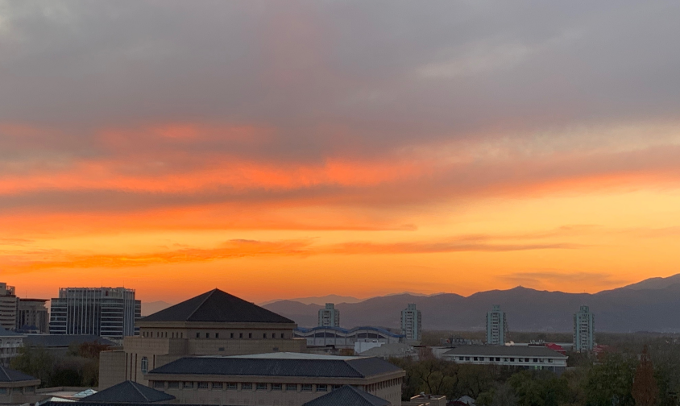

本页面主要列出我的一些想法，以及我无聊生活中写下的一点东西。
关于大四上
- 本学期我选修了以下课程：数字逻辑设计，量子计算与量子信息，体育舞蹈，中外艺术歌曲演唱与表演。
- 本学期我担任了以下课程的助教：计算机系统导论，数据结构与算法 (A) (实验班)。
- 本学期我带了2个班的钢琴课，还在带129。我永远喜欢着音乐。
关于大三下
- 本学期我选修了以下课程：计算机网络 (实验班)，量子计算导论，简明量子力学，电子游戏通论，社会与市场中的计算问题选讲，室内合唱。
- 本学期我在学习小提琴，因为我喜欢音乐，而且我需要学习一些比量子简单的东西，以期从较为艰难的生活中轻而易举地获取成就感。
- 本学期我需要尽快决策研究方向。
关于大三上
- 本学期我选修了以下课程：操作系统，计算机组织与体系结构，理论计算机科学基础，信息科学中的物理学(上)，计算视觉理论、模型与方法，音乐与数学。
- 本学期我担任了以下课程的助教：计算概论(A)。
- 本学期我还在带129，因为我喜欢和大家一起唱歌、弹琴和聊天。
2021.12.30
来点2021年度总结：
这是波澜壮阔的一年，也是无聊透顶的一年。说它波澜壮阔，无非就一个原因，即我保研成功了。2015年底，高一语文老师让我们写年终总结，我洋洋洒洒扯了数千字，中考占了大篇幅。2018年底，我自己写了篇年终总结，高考又占了大篇幅。如今是2021年底，我能谈起的重要的事情，也无非是升学，从初春开始四处求名额，到仲秋才终于被真的录取，今年估计有一半的时间都耗在了这件事情上。我看了2018年写的东西，上面说“北京大学四个字看得我一阵战栗”，确实，我现在还能朦胧地忆起那时的感受，可也彻底一去不复返了，只是过去了三年，我拿着写着“清华大学”四个字的纸，心里毫无任何触动，只希望这套流程赶紧结束。除此之外，我做下的另一正确决定，便是学习小提琴。很久以来我都听说着这一乐器的艰涩，也因此很久以来虽喜欢也只能敬而远之，今年年初真的鼓起勇气开始学，才发现根本没什么难的。它很有趣，虽然和钢琴比起来有些单调，但它的确给我的生活带来了不少快乐。
但即使这样，我的生活还是无聊透顶。我一度对北京西安两点一线的生活感到厌烦，直到现在连回西安都变成了真真正正的奢侈。我得过且过、毫无目的地看着时间流逝，我也懒得规划什么或打算什么。许多年前我就不再相信热爱生活、英雄主义之类的鬼话，即使我狂热地痴迷着陀思妥耶夫斯基，并想把他的“超越逻辑去爱生活”贴到自己的脸上，我还是懒得热爱生活。今年，我深刻地明白了：生活于我而言，不过是获得艺术的代价。我想要体会，或表达，或抒情，最简单的办法就是从生活中榨取这些情绪。至于良好的生活应该是怎样，我压根漠不关心，只要能换取艺术，我就愿意不择手段地鞭挞甚至出卖我的生活。
今年我也读了几本书，我当然是率先高呼伟大的陀思妥耶夫斯基永生不死，然后也恳切地承认，我是真的喜欢高行健那本《灵山》。我还得感谢几次偶然的昏迷与模糊的幻觉给了我创作《晚春》的灵感，我非常喜欢这部小说，有时我自己都不能理解如何想到要这么写。能拥有文学，我还是幸运的。虽然文学是我用生活换来的，但某种程度上，文学也是我安抚生活的手段。今年我的日记比往年冗长详细得多，因为我也深刻明白：在你虚情假意的回忆里，日记是你能拥有的最后的真实了。我希望我能拥有真实。
我倒也越来越清楚地意识到自己喜欢什么，而且我也越来越大胆地做着自己喜欢的事情。这点确实很好。
我并不知道下一年会怎么样。我甚至连“希望能走更远更长的路”都懒得说，两年了，整整两年，我只去过北京、西安和兰州这三个城市。天知道这个世界接下来会变好还是变坏，我也不会再期盼什么。反正不管到什么时候，不管一切有多么糟糕，生活有多么荒谬，我都能写作，能唱歌，我就觉得日子还能过。
2021.12.12
其实你比谁都清楚，在学校你只是盲目又焦虑地度日，在家你的生活只是烦琐的一地鸡毛，可你还是想回去，或者想回来，你真正享受的只是火车驶过郑州时，你看着夕阳融入华北平原的那个瞬间。
2021.11.29
评《一句顶一万句》：
这是我看的第一本刘震云，也大概率会是我看的最后一本刘震云，我不喜欢他。他讲故事讲得不错，可像个多叉树，子树太多，很多故事讲到一半绝了后；话又说得太多，有几句能说到人心坎上，又有几句不知道在说啥。他还不搞场面描写，不主动把你往小说里带，而是在你耳边啰哩啰嗦说一大堆，你进不来也得进来。这像是传统的说书思路（相比于我看到的大部分拍电影思路。我自己写小说也是拍电影思路，故事讲得好好的，来一句“他在正午时分大步流星地离开了网吧，头上顶着早春的太阳和万里无云的天空”）；他不布景、不烘托、不搞隐喻和象征倒是挺脱俗，但…我确实不喜欢。
他也孤独，这书越读越觉得所有人都孤独，但刘震云是入世的孤独，你不觉得他或者他笔下的人物游离于生活之外的，相反，他们是深深地、狠狠地钻进生活甚至被生活淹没的，但即使这样他们还是很孤独。刘震云告诉你：人就是孤独的，人孤独不是因他读了太多书脑子里太多东西别人没法理解，我邻居家儿媳的表哥的堂姐是个文化人，她丈夫也是个文化人，他俩认识三十五年了，啥话都讲，生了三个孩子，大儿子小女儿都成了文化人出国去了，二儿子也是文化人留在身边天天陪着，但他照样孤独；人孤独不是因为他没读过书脑子里没东西跟人说不上话，我二侄子他小舅这辈子最崇拜的人是三十里外村头看门的，一辈子大字不认识两个，话都说不到一块儿，就是胆子大有良心还见义勇为，喜欢帮助别人，活了一辈子救人无数，但他还是孤独；人孤独是因为他活着就得孤独。
天呐，要是让我这么写文章……救命。
我唯一喜欢的片段就是灯盏死的那一节。我这个人经常胡思乱想，又敏感得要命，我还是喜欢看别人写细腻与克制的东西。
以及，把这书跟《百年孤独》相提并论，有点过分了。
为什么当代作家很多都对出埃及记这么感兴趣？
2021.11.19
评《平原上的摩西》：
叙事结构仿《我弥留之际》，看到每章开头的人名我就暗暗觉得不对劲了。写得不错，时空组织也很好，但我不喜欢这种结构，可能是因为福克纳给我留下了心理阴影。但我很喜欢一段句子写半段人生的方式。过去我写文章都是不吝笔墨，我热爱的几位西方作家也是多写一字便能多赚一块钱稿费一样拼了命地写；但时代变了，删繁就简可能才是当代的潮流。
语言节奏感不错，跳跃感强，但东北文学都是这个文风？还是说当代北方作家都这么写？
意向用得很不错，但太刻意了，主席像到自由鸟再到主席像，主席像下面保卫主席的战士，静坐，火柴盒，也有点经不起推敲，尤其是这个主席像和这个烟盒，太贯穿了，不需要思考就能知道这个意向的目的是什么。的确有陷阱之嫌疑。
后面的几个短篇都挺有意思，尤其是那篇《大师》，我真的很喜欢。这也有可能只是因为《棋王》对我的影响太大了，导致我总能从写棋手的小说里窥见并共鸣出一点从棋品到人品的升华，以及从其他活动中看不到的疯劲狠劲。琴棋书画，除棋外都可孤芳自赏、自命不凡一番，唯有棋，那是要在方寸天地间大杀四方、自造历史的。性质完全不一样。
我并不支持“东北的衰落不是宏大的主题”这一观点，我更倾向于认为还没人能把下岗浪潮里宏大的那一面写出来。现在的东北文学很优秀，但也还有更多可以深挖的东西，在生活的粗粝中对情绪探索是永无止境的。
再以及我曾经分不清管雪涛和双雪涛，我听说管雪涛老师在北大，心想这是大作家，我一定要找机会认识请教一下。终于，我在北大的最后一年，读了双雪涛的书，并和管雪涛老师一起监考了ics。
2021.11.4
他问我到底喜欢什么，我说我喜欢一成不变的生活，说完这句话我翻开琴盖，想要弹一首我已经弹了无数遍的曲子。例行公事，我想，我的人生就是在例行公事。我摘下来项链，放在谱架上，这条项链断了三次又被我焊起来，下面挂着一只小飞龙，右边的翅膀已经不见了。它总是歪着挂在我胸前，谁看了都觉得难受，可我只有这一条项链，并不辞辛苦地每天重复着摘下戴上的动作。我每天都要弹这首曲子，然后站在钢琴和门夹起的角落里小声地唱歌，每个月都有那么一天，我会唱着唱着然后大哭一场。我转向他，阴沉地说，我讨厌别人站在我的后面，这让我感到危险。他没有离开，没有办法，我就离开了。我走了出去，走廊里黑得可怖，外面好像在下雨，因为屋顶正有水在往里渗，头顶的通风管也沾满了水珠。好冷，好冷，我不知道为什么这么冷，我的外套不知道为什么消失了。下雨了，我就必须去雨里跑步，跑步的时候我必须在雨里思考。一个多月了，我还是没有想出来那首即兴曲的下一个音应该是什么，我焦躁得快要疯了。我去外面跑了一大圈，在这个旷野上，四周都是黑的，地上全是草，只有一圈突兀的橡胶路，我就永远在那上面跑步。雨停了，我急忙地停住了脚步，冲了回去。他还在房间里，忧伤地坐在另一把椅子上，手里拿着我没写完的即兴曲乐谱。他抬起眼睛看着我，仿佛想告诉我下一个音是什么。我看见我的小飞龙项链还在谱架上，我没吃完的半盒饼干还放在灯下，我的半杯水已经蒸干了，杯子里只留着淡淡的一圈茶印。我朝他冲了过去，没等他开口，我就愤怒地冲他大喊大叫，让他离开，让他不要打断我的生活。我狠狠地从他手里抢来乐谱，从琴凳下捡起了半块橡皮，把上面的所有音符都擦了个干净。可是下一步我不知道该干什么了，我站了起来，开始用最恶毒的话控诉、诬告他。我让他走，让他永远离开我，带着所有人和所有东西离开我。我把我的谱子甩在了地上，赌气地坐在了钢琴面前。谱架上除了那条项链什么都没有了，我刚刚已经毁掉了我最后一张乐谱。我再也不可能想起那首即兴曲的任何一个音，也再也没有任何事情可做了。于是我就例行公事地坐在琴凳上，并且不希望他在这里。我转过身，开始狠狠地攻击和损害他。我大喊大叫，问他是不是听不懂我的话，我让他走，让他消失得一干二净，让他再也不要出现在这里。
2021.11.3
我刚才读完了《灵山》。读完的那一刻我的电子书显示我只读了55.5%，后面紧接着是《一个人的圣经》，这时我才知道这份文件是他两部作品的拼接。
我恍然大悟了，之前在读此书时，我总能看着阅读进度，感到不解——我觉得他的故事已达高潮，但阅读进度只是四分之一多点；我觉得他的故事快要结束，但阅读进度让我以为这个故事只过去一半。我觉得他已经快找完了，他已从西南的密林山野里走出，体面却也尴尬地藏匿在人群中；他已从彻底将自我交付给山林，又回到了在人世间当个局外人——若还有这样多的篇幅，又该去哪里找呢？路上的女伴也走了，故友也见了，癫狂的抒情也抒了，愧疚也有，失落也有，无能为力也有，还有什么可说的？果然这个故事就在我觉得无话可说、因此更加好奇有何可说时，自然地结束了。
这个故事在我看来就是一个不知道在找什么，也什么都没找到，但的确虔诚地、不顾一切地、用灵魂去找了的故事。他好孤独。他让我想起纳博科夫的“我是没有故乡的”，尤其是当他越在无人之境便越拥有自我，而越在人群中便越失语、越尴尬时——而且还什么都找不见时，我为他感到孤独。
2021.10.29
晚上学校的网断了。我放下小提琴，地下室到处都是音乐声，架子鼓打得震天响，几个提琴手在排练四重奏，一支笛子的声音哀怨地飘在空中。大家都忙着自己的事情，并沉浸在自己的音乐里，我就上楼走了出去。你已经在外面等我了。
秋天的夜晚在风中闪着清冷的光，青黄的树叶在路灯下微微抖动。各楼的灯还未熄灭，窗户也形状各异，不远处的屋顶连接着翘起的飞檐。天上没有云朵，随着夜色加深，薄雾开始渐渐弥漫。
你走在我的旁边。没有网，我们无事可做，索性在夜色中漫无目的地游荡。我听你说着白天的事情——乒乓球比赛，教室里的废稿纸，齐刷刷飞舞的黄褐色叶子。你居然说到了西南境的红嘴鸥，我感到不可思议。我们踩在刚刚冻硬了的泥土上。
你突然停下了言语，仿佛要等待我说什么。我发现我们走在一片湖泊的岸边。不知为何这里没有人，我们就朝湖边走去。
世界变得非常安静。湖中生满了硕大的荷叶，却也都干枯凋零尽了。湖边是矮树和野草，草丛里传来窸窸窣窣的声音，我们弯着腰才能不撞到树枝。你仍走在我的旁边，我感到你好像碰到了我的手，就好像几小束摇曳的火焰，轻轻迸射在寒冷中。
我不知道该做什么，我好像听到了你的呼吸，还有尖细的鸟鸣，还有吹皱我们衣服的风。我们后面的研究所已经紧闭大门，唯一一盏路灯几天前短路烧坏了。没有光线落在我们身上。我感到你想牵我的手——你的手指划过我的掌心。这时我们正经过两棵树清冷的影子，我太紧张，有些不知所措。我不知道该对你说什么，我想到了鸟儿的迁徙，还有童年时被我撕毁的诗歌。我害怕地转过了头，我感到你的谨慎和热情，这让我更加不知所措。
残损的荷叶盖满了湖面，让我看不见水的波光。我想起来上一个夏天，我一个人站在这里看着满湖的荷花，当时我并不知道你在哪里，也没有想起过你。我想起来许多个夏天我都没能看到故乡的荷花，沉默让你的身影显得遥远，与你一样遥远的是我的故乡，那些静默的山脚下凋谢的荷花。就在那一刻我缩回了手。我的整个世界是一场压抑的争斗。
2021.9.28
今天发复试通知和录取通知的时候我在琴房和同学排练，因为我也要在教育部网站完成各种操作，因此手忙脚乱，弹琴也弹得乱七八糟，排了两遍之后，我：录一下吧录完赶紧散。
自己弹了会儿琴，心不在焉，根本弹不出来完整的没错音的片段。被录取的激动、尘埃落定的释然和对未来的迷茫又混杂在一起。在朋友圈的一片喜悦气氛之中，有同样去做理论的很厉害的同学写下：不知道做理论是否是正确的路，只能如履薄冰。感觉每年保研季，做理论的同学都会写这样的话，而我认识的所有做理论的同学都比我要优秀太多了，他们比我聪明，比我有直觉，数学也比我好得多。他们都在担心未来，我只会比他们要更加担心甚至恐惧。
很长时间我都在为保研成功而开心，但我也一直不愿意承认我要去做计算机理论，我真的有点害怕这个身份与头衔。我也知道：所有做理论的人都不是一开始就觉得自己能做理论。在漫长的犹豫的日子里，我的理论基础没怎么打好，却听了实在太多理论科研工作者的故事，并一直认为自己不属于他们。因此当我走到现在这个结果之后我一直又高兴又害怕。
我想还是用那句俗不可耐却非常应景的诗歌：既然选择了远方，便只顾风雨兼程。我觉得我会一直害怕下去，因为我真的从来没有真正准备好去做一个计算机理论科学家。但我也希望我能一直勇敢下去，我引以为豪的一点是：在过去的一年中，我的许多决定，都在表现出超越常人、并超越前二十年的我自己的勇气。我也知道我的才能已经配不上我的勇敢了。但没关系，只要我还活一天，我就要勇敢一天。
2021.9.16
开学一周都不到，感觉好像过了很久，前几天还在打哈利波特，但又似乎已经很久没打了。今天折腾了一上午面试，中午吃完午饭就去练提钢。也没怎么练小提琴，回宿舍一看微信助教有一堆事情，计算中心的老师又在找我了，明天又要开很多会。
上午我也知道自己要面试，应该积极兴奋一些，但候场时真的太无聊了，就看完了何伟的《江城》。整个故事在平淡的送别和几则后序中结束了，并没有什么沉重或哀愁可言，但我终于在最后一刻想起来我曾到访并像个居民一样生活过的神木。我和他一样曾在那个城市中久久地徒步，被街上的行人侧目而视，并和异性在夜里约会一样出去吃顿饭。我也把那段生活写了小说，可让我害怕的是，我已经彻底没法把我的小说和我的历史分清了。我和他离开的姿态都很相似，只不过我是朝着新生活而去的。那时的我和他的身份一模一样——一个英语老师。可我又跟他完全不一样，也跟他笔下的中国人毫无相似之处。我最不能理解的是：他的学生在和他谈到敏感话题时会选择中文而不是英文。我彻底想不通这件事情，因为我有强烈的母语羞耻，所有难以启齿的话与难言之隐我都会闪烁其词地用英文讲出来。我想了想自己的生活，觉得很伤心，虽然我也知道我的伤心并无关涪陵或者神木。我想起来前几天我看见一个清洁工在修剪灌木的树枝，在某个瞬间我很羡慕他。我想起来我在家翻土除草的场景，也就是那时我意识到我是与生俱来热爱着土地。我坐在工位上哭了，然后就开始架机位准备面试。我没离开家多久，我就想要回去。我也可以不回去，而是去另一个地方过别样的生活。有可能我只是不想呆在这里。曾经有很漫长的时间我被孤独所困扰，并希望能和称得上朋友的人呆在一起，向他们敞开心扉，让他们参与我的生活。可现在我只渴望孤独，我也不想被人理解，甚至抗拒别人想要理解我的意图。
2021.9.12
明天要开学了，这几天把宿舍彻彻底底翻新了一遍，我的宿舍又达到了这几年来最整齐的时刻。在家里搞了一个假期的搬家和装修，回来之后还是忍不住要继续。其实在这里只住最后一年了，按理说没必要大费周章。不过就当是为读博士时装修新宿舍做一次演练吧。
现在越来越不想扯进没必要的love affairs，也越来越觉得关系的亲疏与言谈的多寡都无关紧要，而困难的是在这样的时刻能够不动声色地明哲保身。年少的时候曾觉得碰上这样的麻烦事没什么不好，甚至还会有隐隐的窃喜，但现在是真的对这些事情——在交谈上的技巧或是在关系上的刻意调整——感到无聊甚至厌烦。有时候我感觉我已经过够了斟酌言辞的日子，并越来越觉得大多数人都可有可无，大多数攀谈都毫无意义。我担心别人误解，但我又觉得：别人爱怎么想就怎么想吧。所以我越来越不想和他们说话。
我愈发对文学作品中的很多人物形象的塑造感到好奇。按照规律，他们身上的故事越多，他们就越健谈，越渴望被理解，越乐于倾诉与表达。他们热衷于寻找知音，又热衷于将自己澎湃细腻的情绪对别人倾吐殆尽。可我却好像恰恰相反：发生在我身上的事情越多，我就越封闭，并疲惫于沟通，并彻底懒得自我表达和自我塑造，更不奢望任何所谓的理解。
有太多显而易见的道理我用了太久才明白，比如此时我才想真的清楚：随着年龄增长，了解另一个人会变得越来越困难。
北京一直在下雨，往往是在夜间。北京的秋天还总有槐花，我到现在都没适应这一点。
2021.9.1
很长一段时间以来西安都在下雨，而我的心情都非常低落。我总是睡得很早，做很长的梦，梦里总是战争和孤独。每次醒来我的思绪都会被困在梦中，对很多细节百思不得其解。我想离开西安，但我看到北大新生开学了，我弟弟也开学了，我反而害怕回到北京去。前几天我填完了清华大学的推免申请，我总觉得那些信息所描述的人不是我自己。我好像在描述另一个人的故事。我也不敢面对我一个月前做的选择。我还迟迟不敢跟老师要推荐信，今天一位老师突然把我从去年的助教群踢了出去。我不知道为什么，我一直很害怕她厌烦我，也许她真的厌烦我了。可我从来没有尝试与她交流过。我渴望她能理解我，但我又极度地抗拒一切形式的沟通。天气在不断转凉，有时我只是看着窗外的雨，就不知道该何去何从。我能无所事事地虚度一整天，拉无趣的小提琴曲，读无趣的书，然后早早就睡去，做着诡异却无趣的伤心的梦。我似乎很久都没有这样沮丧过，又似乎一直这样沮丧着。今天醒来我看见外面的阴云，我就知道今天又将是一个消沉的日子。我迷恋这样雾蒙蒙的雨季，却又被低血压和湿疹所困扰。一年前的今天我度过了非常难过的一天，因而今天我不可避免地想到这件事情。我想尽量逃避这些回忆，于是我出门走了很久。徒步让我有片刻的欣喜，熟悉的街道、凉爽的秋风和静默的城墙让我平静了下来。我想起来之前点点滴滴的美好，想起来我和不同的人如何快乐、轻松、兴奋或惬意地经过这些城门，经过无数个平凡恬静的黄昏。可当我回到空无一人的家里面对着窗外的灰楼和灰云，忧伤还是不断地涌来。有时忧伤如同不可名状，就是蓦然出现在我毫无波澜的生活中；有时我又好像知道忧伤全部的来源，可我却无法将它釜底抽薪地赶走。无所事事与长久徒步都起不到任何积极的作用，我越来越对我的消极情绪感到无计可施。我不想停留在任何地方，也不想和任何人说话。我希望时间可以倒流。
2021.8.29
文字是无端的情绪的唯一出口。现在是8月29日，一年前的今天我的生活尚在风平浪静，而我在那时已经做了很久很久的回忆狂徒，且至今仍是。我永远忠实地坚信回忆过去是逃避现实的方法，犹如畅想未来是逃避过去的方法，而享乐主义是逃避未来的方法。没有人能同时逃避这三者，除非死亡，而这个世界上，每时每刻每个角落中都有人在逃避着什么。
我并不最近才钟情于回忆，但我的确最近才开始狂热地恐惧于未来。 我永远没法在西安渐凉的秋风中保持缄默，许多年前我在中学教室里反反复复朗诵“归去来兮”时这一切就已注定。太阳南移，阴云常驻上空，夕阳开始衰老并黯淡。那时我已隐隐猜到每一年的夏秋之交我都必将告别着什么，因为相比于逃离，仲秋的到来与万物的退隐似乎更加让人悲哀。于是就是这样一语成谶，告别永远伴随着夏秋更替而进行，永不止息。
我也渴望生活在江流穿城而过的城市中。在北京生活的时候，我总喜欢走很远很远，装作漫不经心地路过清河，因为那里的风是永远不熄的。有人告诉过我：二十年前的清河污臭、肮脏不堪，他说下这话的时候我就想到遥远的苏州河。我去过上海，但那年我年龄太小，我在漆黑的夜晚站在外滩的广场上，充满艳羡地看着几个滑旱冰的孩子。我忘了苏州河长什么样子，也浑然不知这样的河流埋葬了城市中多少爱恨情仇、悲戚苦难。我凝望过太多河流却也几乎未曾踏足过太多河流，时至今日我都不知道我在南方的祖籍上究竟有哪些水系滋养着已让我感到陌生却血浓于水的土地。
我曾设想过我的终点，以及我笔下所有人的终点，而这时我也往往意识所有人都只是我的一个替身与残影。我知道情形应当是这样：
她再次醒来，看到四合的暮色与桥上弓背的老人，明白一切都将结束。她走上了桥，老人转向她，问道：如果再来一次，你是否仍会如此选择？
她答：仍会如此。
老人轻轻地笑了一下，引她过桥，说：上次你也这么回答。
她在彻悟的一瞬间跌入了迷雾中。时间被她柔软轻盈的身体撞得四散开来，复而合起。她被时间包裹着下坠，并失去了全部的意识。五十五年前，在北京城的西南侧，一个婴儿就这样柔软地降临在了人世间。
2021.8.22
初秋，西安是一个阴雨天。八月马上要结束，天气也越来越冷了。
感觉自己已经彻底习惯了因为疫情而导致的种种失落与无奈，也习惯了不再有太多的盼望和期待。七月初我雷厉风行地回家，没来得及去圆明园看荷花，一直回来后去王莽乡看一看——其实已想了三年了，但如今秋已来临，荷花早就败完，三年了，我还是没能去看上一次。我也一直盼着能去成都，并想着从成都继续南下，到海边去，也许路过上海去看看我的朋友，或者直接将崇明岛设为目的地。但这些计划无一例外都因为疫情而全部终止了。
一年了，我连秦岭淮河这条线都没跨过，西安竟然成了我居住过的所有地方中最靠南的那一个，我的足迹也无非是从一个平原移到另一个平原，从离国境线还很远的东边到离国境线还很远的西边。
我也会想这一年我到底得到了什么。一年前的此时此刻我已经安排好了接下来至少七年的人生——就在一切天翻地覆之前。很多事情用了很久才慢慢地浮于众人之前，即便真相至今仍无人可知。我现在早已足够平静，可我仍觉得当时的一切都太突然了。不久前我主动地梳理了这些事情，才意识到：我离开的那日是我19岁的最后一天。我感到一种难以言说的忧伤，好像命运早就在这些有着象征意义的时间节点为我设好了绕不开的路障。
我在一整年里割舍、撇清过去，也在一整年里寻找、探索新路，然后逐渐明白过去的烙印是不可能彻底消失的。面对着我从未设想过却又有如注定般的结局，我再次感受到命运仿佛在此中作祟，并早在我有任何细微预感之前就安排好了一切。
但总之，我觉得我应当为过去发生的所有事情感到高兴，从最初的惊慌，到每一次不假思索的改变，到那些几乎是知其不可而为之的尝试，到最终在两个选择面前的犹豫不决。反正，如若没有这一年的过去，我现在绝不可能以如此平静、坦然到几乎要无所谓的态度面对正在发生和可能将要发生的事情。
我仍旧对自己持有怀疑和些许的悲观，但不妨碍我在面对未来时保持绝对的勇气，并对身边的善良和友爱保持绝对的珍视。不论我的过去、现在和将来怎样，我都对自己能遇到身边的这些人感到由衷的幸运与感激。
2021.7.26
我今天终于做出了一直不敢做的决定。我感觉我解脱了，虽然后面要走的路只会更难。在遇到他之前我从来没想到我会继续留在北京但是离开北大。
最后关头发生的事情也过于离奇，这一年发生的每一件事情都在警醒着我：不论你认为生活有多么离谱，生活都会在下一刻变得更加离谱。总之我是真的要离开了。
“离开”，这个词我最近用了太多、太多遍，虽然这实际上是我这一整年都没有做成功的事情。
我用了很多天把我的故事写了下来，却不敢也不愿给任何人看。我说：只要我还做一天科研，我就还是那两年所塑造的我，并活在那个秋天的阴影之下。我不知道再过一年、十年乃至于五十年我会怎样看待我身上的事情，所以我只能把它记下来，然后交给时间吧。
我还在写一篇名叫“离别”的小说，虽然我很有可能某天就把它改为“重逢”，或者“船歌”，或者“雨滴”，或者任何可能的不知所云的、但总之跟贝多芬没有任何关系的成语。可最大概率显然是我会沿用最开始想到的标题。
西安一直在下雨，我一整天几乎没出门，都在家里弹琴，不开灯，弹得昏昏沉沉。拉出来勃拉姆斯第三钢琴奏鸣曲，只弹第二乐章，弹了一晚上。这首曲子曾一度让我非常伤心，但再也没有什么曲子能像它一样描述我此时此刻的心情了。
之前看过一个问题：如果你此生都不能再碰乐器，你会演奏的最后一首曲子是什么？我当时思考了这个问题，我觉得我会去弹柴可夫斯基，但又有什么曲子可弹呢？或者按下440hz的那个琴键？我一直没有想到答案。直到今天我才明白：我一定会演奏勃拉姆斯第三钢琴奏鸣曲第二乐章，且只弹这一首。这首曲子平静、阴郁又柔软，就像天翻地覆之前最后一抹灰色的愁云。它把我经历的一切都讲完了，如果我能在钢琴上顺利地把它弹完，我也就回顾并放下了已经发生的一切。真的，我认回顾与放下应该是所有事物结束的方式。等我按下最后一个琴键——也许我会处理成自由延长，我就可以离开了。
2021.7.14
看见邮箱一条未读，带着些隐隐的希望打开一看，却是一篇论文被导师拿去投会议了。
一时间不知道应不应该高兴，在一阵恍惚中想起高二的一场期中考试。我一如既往地在最好的考场，考到一半学校领导突然把几乎整个考场的人都叫走了，说清华有个考试，让他们立刻去考，整个考场只剩了三个人，其中就有我，然后又把后面考场的人移到了我们考场。
当时答题的时候很难过，觉得自己怎么能没被选上呢？不过当时也不敢想太多，只是告诉自己稳定情绪，好好答题。下午考化学，考到一半又进来一个校领导，在同学和老师的惊愕目光中，他径直走向我，不带任何解释地说：“考完试来政教处一趟。”我当时一阵惊讶，笔下作答不停，情绪却彻底没法稳定了，心中带极大的期盼：也许我是又选上去那场考试了？我三心二意地考完化学，然后直奔政教处，老师看我来，满面笑容地对我说：“你的区优干升成了市优干，就这一个多出来的指标，我们给你了。”我当时也是愣在那里，一瞬间竟不知道是该失落还是高兴。如果这放在平常，我肯定是要高兴的，但在此时此刻，我虽也能惊喜地对老师道谢，心中还是有着无法抹去的失望。
我最后理所应当地拿到了市优干的荣誉，在期中考试中也理所应当考了年级第一，并把第二名甩去甚远，而化学也理所应当地成了最低分。
时隔多年我再想起那次考试中矛盾的心情，似乎与现在无异，但又有了太多异。时光在稀松平常的事中所造就的差距便是如此难以言说。
2021.7.1
“我们很感谢您，”馆长一边将邹文送出会议室，一边说着，“您今天提供的信息实在是太有帮助了。她从未写过她的少女时代，这些事情一直是不为人知的。我们会尽快整理出来，并尽快刊登。”
“不必言谢，尽点绵薄之力罢了。”邹文说。“更何况我也是有私心的。您应当也能理解，我只是尽可能地想让她的故事——或者说她和我的故事，留存在这个世界上。”
“我当然理解。”馆长顺着他的话说了下去。“人们也是希望读到这些故事的。这些年别人写她的回忆录也不少，但您这个视角的确从未有过。”
邹文沉默地点了点头。
“不过——恕我冒昧，”馆长继续说道，“您的观点中有一点我倒是难以苟同。”他的语气虽然恭敬，却有着绝对的坚定与自信。
“哪里？”邹文很是困惑。
“您说她一生都在写小说，从童年时代开始，直到她去世。”馆长说。
“事实的确如此。”邹文也坚定地说。
“可是，”馆长说道，“除了您之外的所有人都不这么认为。”
“那你们觉得她在写什么？”邹文问。
馆长没有立刻作答。他读过她的所有作品，看过学界对她的所有评论，参加过所有纪念她的诗会。他望着面前这个如今茫然、佝偻、贫穷、落魄的老人，自觉心明眼亮，已经彻底看穿了一切评论家们在她的文字中苦苦求索却不得的事物，并明白眼前的人就是在她的作品中被晚风、野花、路尘、蜻蜓等意象所象征的。他斩钉截铁地说：
“她一直在写你。”
2021.6.11
早上叫醒我的又是鸟鸣。我起来拉开了窗帘，窗下的梧桐花又落了一些，槐树却日益繁荫了起来。清晨的日光还是柔和的，昨夜的雨还在地上留着痕迹，我就打开了窗子，风比想象中凉爽很多，徐徐吹进的时候窗边的风铃开始作响。这个风铃是我上初中时一个同学送我的，在我家挂了许多年——而至于是谁所送，我已全然忘却了。我去换了衣服准备出门，沿着南二环往东走，去学校上班。雨夜之后走在街道上总是惬意的，有时我甚至故意放慢脚步，刻意在清晨中多逗留一会儿。
下午回来时我想到家中的花已放了有两周，该换新的了，就在一连排花店中随便挑了一家走进去。店主是个年轻女人，我模糊地觉得面熟，也许之前在她这里买过几次。我照旧买了雏菊和玫瑰，付完钱看她用红丝带给我把花扎好，抱着花继续往家走。街道仍是金灿灿的，我曾一度抱怨这里的夏天日落太晚，甚至有时我吃完了晚饭打扫了家里，走到外面，发现夕阳还迟迟未能降临。
我捧着花，再拿东西有些不方便，但总还是想在街上四处转转。隔壁水果店的香蕉与樱桃又在打折……没什么可犹豫的，想吃就买吧，虽然结账的时候老板还在嘟嘟囔囔地问：“你为什么不给自己买些好点的？”他已经记住我了，却总看不惯我买便宜水果的行为。腊牛肉与酱牛肉倒不必再买，蔬菜家中也存有很多，米店的藏獒在五金店门口昏昏欲睡，我也懒得去打搅它。一只猫带着它的几只小猫趴在树荫下，其中一只活泼的小猫一直在试着抓空气中的蚊子，这种徒劳无功总让我找到共鸣。夏天街上除了花香、果香、炒货店的花生味，最多的就是花露水的味道，和我遥远的在全城最南处度过的童年没什么区别。我又去买了酒，换了左手捧花，右手拎着酒瓶，临走时烟酒店的老板娘还不忘夸我打扮得好看。我心里有些发笑，每次我越是我灰头土脸地拿着一堆东西赶着回家，她就越要夸我。
快到端午节了，上周姥姥就已经从药店给我买了一大袋子香料回来，连带着一把五彩的线绳，笑眯眯地交到我手里。我惊异地问她在哪里买到颜色这么鲜艳的绳子，她也不告诉我。做香包的事情是不能再拖了，我就又去布料市场捡了几块碎布，一番好言相劝后让老板几乎是白送给了我。那款蓝色的十字纹编制布我不太喜欢，边缘总是开线，但颜色好看，还是留了下来；另一块洒金的大红布我却特别喜欢，上面还有龙凤的纹样，面料摸着也舒服，我怀疑是有人在这里订了婚被，做完被面之后剩下的。还有几块浅色的碎花布也很好看，让我甚至想买一整块去对面的几家裁缝店制一身新的旗袍，但也不是今天需要考虑的事情了。我还是赶快回家吧。
家门口琴行的人又把电子琴和鼓摆到了外面，可能晚上又想搞一场大张旗鼓的露天音乐会。店主见我走过，高兴地跟我打了个招呼，并询问我上次看上的钢琴什么时候买。我说我真的没钱，是不会买的。但他还是很高兴，并邀请我晚上一起来参与他们的音乐会。他甚至想让我现在就来演奏一曲，但看我拿着太多东西，也就作罢了。我告别了他，准备回家时，看见推着车卖茉莉的花贩。我实在拿不动东西了，却又特别喜欢茉莉花，想着吃完饭赶快下来，如果他还在的话再买一束回去。
我终于到了家门口，懒得掏钥匙，家里门铃也坏了，我就在门上胡乱地砸了几下。母亲来给我开了门。“你上完课了？”她问我这样一个答案显而易见的问题，并接过我手中的花束，但我看见红木案上的花瓶已经插满了茉莉花。“你也买花了呀？”我惊叫道。“在楼下买的。我还给你买了樱桃，你爸给你俩买了酒。”她回答我。
我放下了手中的东西，一边修剪花枝，心里却突然伤感了起来。学校说要把我调到南方城市去工作，他们知道我的倔强，牵强附会的理由都说不动我，便直截了当地对我说：“工资是现在的三倍。”我不置可否，他们继续补充：“那里下午六点就能看日落，芒果三块钱能买一盒，栀子花一块钱能买一把，还有全中国最大的珠宝市场。”我当时有些惊慌失措和恼羞成怒，不知为何自己的喜好被他们看得一清二楚，但仍镇定自若地说：“我考虑考虑。”我也不知道究竟要考虑什么，可我在这里的确有太多需要留恋的事物——但无论怎样，先吃饭吧。母亲又在喊我了，全家最后一个到餐桌的人势必会遭到她的批判，我还是动作快点吧。今天的日落时间是晚上八点，无论怎样，我都可以吃完饭拉着父母去把夕阳看了，也许再去琴行的音乐会弹点肖邦之流的曲子，留出来一个小时备课，然后还有大把的时间可以挥霍在夏夜中。
2021.6.9
啥都不想干也不想管。只想拿一大笔钱，不停地朝南方走，一直往南一直往东，穿过各种各样的大山大河，到最南最东、日出和日落都最早的地方去。不知道这样子我的生活会不会就和我梦中的一样，我现在拥有的一切都会消失，只有山川和大海是存在的。爱人不会带走我的枪与刀，昔日的友人也不会沉默而尴尬地出现在我身旁。我应当生活在海边，生活在旧货市场里，生活在永远不会凋落的常绿乔木下，生活在炼金的师傅、打银首饰的工匠和制衣的裁缝姑娘中间。白天我可能就在集市里转悠，想找找南方特有的奇珍异宝，碰到一位古董商对我炫耀着清代的收藏，我哈哈大笑，嘲讽说唐朝之后都不配叫古。但他为我展示的器具上一定有我从未见过的海浪的纹样。我一定会买的有：广州港进的打口碟和台湾产的珊瑚手链。我听音乐，听腻了就关掉碟机，站起来面向大海拉小提琴。我不敢站到外面去，因为昏暗的天空总是在下雨，只有在黄昏施舍般地放晴，让我可以忘情地看半个小时夕阳。街上的女人们笑话我分不清棕榈树和椰子树，但这没什么，我不仅不会生气，还可以给她们每个人送一束花，听说南方有无穷无尽的鲜花，有的长街几公里都是花市。对于小孩子，我会给他们唱一些歌，比如说《大海啊故乡》，然后告诉他们大海并不是我的故乡，可我喜欢这首歌，就像喜欢美丽的大海和海边的人一样。我不知道要吃什么，如果有钱我就去吃烤牡蛎、鱿鱼、蛤蜊，还有新鲜的鲅鱼饺子。如果没钱我就白天喝椰子水晚上喝啤酒，喝多之后兴许就能忘记饥饿并想起绚丽多彩的童年。我会把我新写的诗送给卖海鲜和椰子的人，他们可能不屑一顾，我不管，我就要送出去，仿佛自己真的是个伟大的、慷慨的诗人。夜里我不会随人们去赶潮。我怕黑，不熟悉水，可我又那么痴迷黑夜，因此我会从海边往市中心走，如果遇见卖黄桷兰的人，我可能会过去买一大串戴在脖子上。除了红珊瑚我不应该佩戴任何首饰，但如果有黄桷兰我一定要挂在身上。如果太热我就找个有风扇的地方坐下，可能是个小卖部，只要我买一瓶酒老板就不会赶我走。我一边喝酒一边问老板这一生的故事，问问他去过哪些城市，再问问他有几个孩子。我在城里走一晚上，说不定还会买几条便宜的裙子回来，凌晨的时候我就着暗暗的灯光洗漱，把鲜花从身上扯下来。这没什么好心疼的，因为我明天出门时可以再去买一串。睡前我把首饰盒拿出来，珍爱地欣赏一会儿那些闪闪发光的宝石和珍珠，再把它们重新放回去。如果睡得太晚，我会担心明天赶不上日出，但也无所谓，在南方的海边错过日出根本不算什么，还有无穷无尽的日出可以看。在无忧无虑的南方，生活的尽头只有两种可能：一是死，一是因为思念秦岭而不得不回去。我不知道我会落到哪一种，但这都是让人高兴的结局。我只要看着大海，等待着属于我的结局。
2021.6.3
每当被命运与旁人的善意淹没的时候，都觉得自己是德不配位的，比如说降生在爱与温柔之中的时候，考上中学的时候，考上大学的时候，因天赋轻而易举做到别人难以做到之事的时候，再比如说此时此刻。其实说德不配位都觉得轻了；某种程度上，我甚至有时无法坦然自处，觉得柳暗花明和否极泰来竟是我的原罪：凭什么我就能拥有这一切？
而遇到困扰与窘境时，我虽然焦灼，但往往会更自如一些，并觉得：我的生命已不自然地顺利了那么久，我已隐隐感到不安，觉得审判总会到来，当下的不顺才是正常的，反而能让我心里踏实一些。
因此我既然总是如此幸运，就还是应当尽我所能去奉献一些，否则命运赐我的善意真就会成为我的原罪。虽然这么说来，无私的根本诱因也成了自私，但我还是觉得我应该也为别人做点什么。
2021.5.29
今天我参加了北京大学湖畔歌会的表演，在学生合唱团中唱了5首歌。在这个活动的排练过程中，我常常因为低效而感到无聊厌烦，但真的站到歌声乐音与红旗之中，还是能感到盛大的繁荣与激动。其实这一天是这样度过的：上午我和他一起去清华参加考试，我什么都不会，只做了第一题，下午我听了半个小时讲座就骑着他的自行车赶回北大准备表演。候场时他也不断给我发来讲座中有趣的片段，我站在主舞台唱歌的时候他应该也在与其他营员同学们合影。这一天我的确很累，而且为没有进面试有些许的失落，但我感觉这就是青春该有的样子。
2021.5.28
今天我写完了耗时近一年的小说《晚春》，正文8万字，是我这三年认真写小说以来创作的最长的一部作品，我很有成就感。
写这部作品的心路历程是这样的：一年前我得知自己将创作一篇基于下岗时代背景的小说，遂阅读或观看了一批下岗文艺作品，甚至仍在西安时，重新翻出班宇的冬泳，试图学习语言风格。冷峻、硬朗并口语化的文风我根本坚持不了多久，纵使想要学习班宇，学了一千字就已力不从心。继续往下写，到了一段描写回忆中的疏离感，竟觉得似乎在潜意识里模仿了塞林格。塞林格是一位我非常钦佩的作家。继续写到女主角出场，氛围变得柔和、朦胧了起来，色调也变得温暖了许多。女主角是一位纤瘦、隐忍、沉默的姑娘，像极了娄烨电影中那些影影绰绰的瘦小女人。我在写她时脑中不断闪现着娄烨摇晃的镜头，那些寡言的、倔强的、孤独的女人的背影和落寞眼神，并也极力给成都的夜色，添上娄烨的寂静与压抑。写至女主角出场便停笔搁置了许久，再继续写时，文风已经又与之前全然不同了，全文未就，读过片段的人已纷纷评价：像余华。我诸多年前就读过活着，不置可否；直至去年秋天读了细雨，方知何为天才。我承认从那以后自己的写作的确摆脱不了他的阴影，但每当被人一眼看穿之时，也确实生出几分惭愧与得意出来。
在创作过程中，有太多事情是没有经验的，只能靠天马行空的幻想。我在性上毫无经验，过去写到性总是隐晦地点到为止，这次却甚至有了心理描写，这层突破对我而言算是初次的尝试；在血腥暴力上更是毫无经验也不可能有经验，却也拼拼凑凑出了一些场景出来；至于农村、工地、九十年代的中学，似乎与人们的日常贴近得多，可我也的确全无体验。平日的阅读与思考促使我得以在想象与查阅资料中完成故事的撰写，但我还是得承认，写这些内容绝非容易。因此，我建议全世界的作家都好好深入生活，仔细体会自己身边在发生的一切，做到闻一口空气就知道这条路上的行道树有哪些种类，望一眼卷云就知道几点到几点将会下雨，进一家服装店就知道老板是哪里人商品从哪进货，看一眼老人写的字就知道对方还能活几年，听汽车发动机声就知道这辆车烧几号的汽油已行驶了几万公里。你说你做不到？没关系，这不妨碍你成为一个好作家，但你只能靠想象了。
2021.5.26
今天和奚佳琪看了《情书》，看完之后拿起手机，看到大家都在发彩虹、晚霞和日食，群里交流着保研，还有同学在私聊问我以后到底去哪。然后我还得解决上课和彩排冲突、考试和演出冲突的问题，明天一大早写几封请假邮件和个人陈述。愈发觉得看电影是一件恍如隔世的事情。
中午回学校的时候就被层叠的云和槐树的味道搞得快要不能自持，片刻后竟就开始下雨，斜织的雨丝就似乎一瞬间挂在了空气里。我倒也不是伤感，也不是非要去想2017年的蔚秀园，只是——北京的雨真的没法让我镇定。晚上看完电影走出来，回了几个消息，抬头想找月亮，无果，只看到满天浮云。晚霞也早已褪去，夜里九点半还能看着夕阳的场景只属于我远在西北的童年。只有风还在吹着，让人快要流泪。一时间竟有些庆幸错过了壮阔的月食与晚霞寂照，因为如果看到这些只会徒增烦恼。
2008年的时候曾有一场盛大的日全食，那时我还不到八岁，按理说不应记得太多事情，可日食的场景却历历在目。父母开车带我到北郊的啤酒广场去，从车上下来我手里已经拿着一张胶片，他们教我可以拿着它看太阳。我把胶片举到眼前，清晰地看到血红的太阳正在逐渐变成血红的月亮，再逐渐消失，顿时天昏地暗，白夜降临，片刻后红日再又浮现而出，世界复明，天地似在上演一场加了速的昼夜更替。我惊奇地看着这样反常的奇观，当时的我还沉浸在地震的阴影之中，对自然的残酷心存极高的敬畏，在看完日食后，又对自然重新产生了迷恋起来。后来夜晚真的降临了，我吃了一会儿烤肉，觉得无聊，和几个陌生的小朋友一起去野地里玩，遇到了一只受伤的麻雀，大家不敢轻举妄动，只是围绕在它旁边。最后大家试图讨论出一个人选将这只麻雀带走，我是全场唯一的女孩，这个使命就落到了我身上。麻雀被放进了我的掌心，它温暖、柔软、战栗的身躯与羽翅碰到我，让我发出惊叫。后来那只麻雀从下水道逃之夭夭了，接下来的十二年，我不断地梦到幼鸟躺在手心，梦中的触觉与记忆中的半点不差。
关于西安城北啤酒广场的回忆我还能说太多。啤酒广场和旧屋、麦田、苗圃、溪流、野山，乃至整个西北的草原一样，都只是承托了我疯疯癫癫的童年回忆的载体。在我升入中学之后这些都结束了，我不知接下来的人生中我需要付出多少努力，才能复原这样的童年。
所以呢？所以十二年前我也会看电影，也会关心日全食、自然灾害和我的小说，这和现在的我半点不差。可我实在没法再在湿草地上跑来跑去，弯腰从卖唱歌手的吉他下方穿过，和一群不认识的孩子抓蚂蚱找麻雀。如今我只可能在铁桥和理科楼天台上看月食——好笑的是，我旁边还会贴着“拿起电话，唤醒希望”的标语，为我仍在暗淡的未来忧心忡忡——即使我想研究的领域的未来更要暗淡。晚上吃饭，旁边一桌是一个人大附中的中学生和她的父母，我偷听着他们谈话，不知心中已是第多少次泛起回家的强烈欲望。或者说我更想回的并不是家，我只是不断地想要回到过去的时光里，回到自由自在地写长篇小说，不用担心每段里面有没有重复的词语、每个情节是否符合逻辑、每句话是否足够凝炼精粹，或者说，不用怀疑自己是否“有用”的年岁中。即使我的生命都是在忧心忡忡中度过：我为平庸的钢琴水平而忧心，为没被当众朗读的作文忧心，为考初中考高中考大学忧心，可过去的全部忧心都只关乎我一人。我没有被定义、被寄托、被选择。可如今事情早已不一样了，我有无数种选择可以做，唯一不能做的就是沉湎于过去。
因此我只能写作，只能悲哀地在小说中让一个神经质的作家替我说：只要能重新经历一次生命中最快乐的事情，死也值得了。
2021.5.18
最近北京总是下雨，这很正常，因为北京的一个主要特征是：在夏天的夜里突然下雨，下得很大，停得很快。下雨前总有种种征兆，如风，凉意，水汽，低飞的小虫。通过几次下雨，我总结出了如下的规律：
如果再有人问我什么是存在，我就会这么说：你应该在下完雨的夏夜听着这首歌跑向未名湖，身上的衬衫被风吹起来，左手食指传来疼痛，世界上所有的水汽都被你吸进肺里。你穿越白色的、红色的、蓝色的、黄色的灯光，经过高大的、瘦长的、低矮的、旁逸斜出的树木。你闻到植物、泥土、湖水、灰尘与铁锈，并从这里面轻而易举地辨认出熟悉的、陌生的、急促的、绵长的味道。你闻到一万种花香混合在一起，闻到一万只飞鸟的羽毛掉落在一起。风从你裸露在外的脸颊吹过，你的头发绞在空中。这时候你会想起一分钟前琴上的松香，一个月前遍地的虫豸与落花，一年前故乡的城西侧的沉默，十年前的暴雨中袭击你的夜猫，十五年前秦岭山下的破屋——你坐在屋顶听风，看着满天满天的星星。你想起你这一生在雨中走过的所有路，这些路上的气味被混合在一起，此时此刻对着你扑面而来。这时候你就知道你是存在的。
2021.5.1
十年前的夏天我呆在长安大学的院子里。建筑系馆的小白楼在那时已经经历了十年的风吹日晒开始发黄，而四年之后屋顶的花园才刚刚建好，我喜悦地进去拍了几张照片，后来就再没去过。只是每次经过系馆都要抬头，看见藤蔓和花朵垂在空中，一次比一次垂得更低。
我在系馆里度过了漫长的童年时光，有时到了假期一呆就是一天。母亲要开会的时候我就去外面买饮料然后送上来。现在我已无法想象那时的我去水房洗手接水。水房没有镜子，水池是坑洼不平的廉价石材砌成，上面连水壶和盘子都放不稳。瘟疫之前的年岁中洗手只是微不足道的小事，是在手上沾几滴水就能完成的过程，不像现在已成为一道严谨的仪式。枝繁叶茂的春天里我一直心安理得地在简陋的水房里出入自如，直到进入了不错的中学，过惯了水房干净敞亮有镜子的日子，我才开始怀疑系馆建得是不是过于敷衍。很多年后我又进入了不错的大学，过惯了在白色大理石台面上用洗手液洗手的日子，便终于批判起系馆来。自打我有记忆的十几年来这个水房一直都是这样，没人想着让它变好一点。
直到很久以后我在某个假期的下午，在百无聊赖地进行了一上午的工作后起身来到楼顶，无所事事地切开水果，然后去走廊里的水池清洗水果刀。楼道里一个人都没有，我打开水龙头，第一次如此近距离地观察它，清水汩汩流出，黝黑的水池的台面也是坑洼不平，我把洗好的刀放在一旁，没放稳，它掉进了水池里。我当机立断地感受到了一丝哀伤，并知道我已经彻底原谅了系馆里简陋粗糙的一切。而原因只是因为我在很多年后的一个下午想起了童年。
2021.4.23
难眠的夜总能让我彻底地看到独立于生活之外的景色，不像以往，所有独立的梦最终总是不可避免地被我与回忆混为一谈，撕扯不清。
开端是我走在山谷之上，下方是河流，我需要沿着某条山路走到对岸，再下到河边。然而道路狭长，前方又有人横挡路中——我应该是处于一个动荡难测的时局中，连与陌生人打照面的勇气都没有。我当即从山谷上跳下，落入河中，游到对面。我清晰地知道自己不会游泳；恐惧也曾在梦中占据了我的意识，但我最终还是到了对岸，并在等待我的人群中看到了母亲。她惊讶地问我为何以如此危险的方式而来，我说山上有人，我不想起冲突。然后我轻轻地感慨道：“即使坠水而死也不是最大的遗憾。我当时在山上看到前面的路上有几只黑白花纹的小猪，之前从未见过，很想过去一看究竟，但没走那条路，而以后可能也再看不到了。”我竟真对这样的遗憾而伤感起来，但当我望着滚滚的河流与对面翠绿的高山，美丽的景致又让我重新感到一些欣喜。
后来我住到了某个偏僻的旅馆内，旅馆中同住了一些可能是认识的人，但意识中挥之不去的危机四伏让我充满警惕，并不敢和任何人说任何话。接下来我在某个天色昏暗的中午前往一家更为偏僻的咖啡馆，在里面找到一本旧影集，打开后在上面看到了我弟弟出生时的照片。上面有我的小姨和母亲相拥，还有留着长发的我抱着弟弟，有我们坐在一起的合照，弟弟躺在大人怀里。
我在荒僻的、陌生的街道上游荡了很久很久，暮色一点点地落下，再逐渐被黑夜取代。等我再回到旅馆已经是拂晓。我站在窗子前看到远方暗红色的云影，那一刻我想去通知所有人，告诉他们：一场极其绚丽迷人的朝霞将要到来。
2021.4.19
昨天吃完午饭爸妈离开北京了。晚上朋友过生日我们一起吃了饭，除此之外的时间都在卷卷卷卷卷卷。而且卷的都是没啥用的。
今天下午去医院。等待过程写完了一科作业。从医院回来 wyf和dcz来接我，一起开展了一次帮助蒲公英繁衍生息爱心活动，挺开心的，天气也很好。然后去琴房，弹了好长时间舒伯特。碰到了很凶的占琴房的人。一个同学去讲理，被骂了一顿，我在旁边观战也被骂了。结果拉小提琴音准就突然大进步，神奇。
最近没事干的时候总在想着成都，两年前的回忆过于美好了，那时候无所畏惧地坐飞机，横跨中国大地，半夜一点打车去酒店，躺在床上写论文，以及半个小时买三条裙子的伟大功勋简直就像做梦。那次我降落在成都后的第二天清晨提交了一份论文，下午导师就布置了新的工作。如今这两份工作逐一被拒，昔日合作的同学们也都逐渐分散了。
晚上回宿舍想吃点东西，把父母给我的布袋子打开，看到留给我的一壶酒，几包零食和一瓶药。每次他们来到北京又离开，我都会有这样细微又挥之不去的失落感，好像只有在这些时刻我意识到自己是离开了家在外求学的。我突然就很想很想很想他们，也很想回家。我想回去招生，但是我也知道自己早就厌倦了西安。我又开始想成都，想我们在成都度过的日子，想在下着冰雹的盛夏躲在成都街边奶茶店的门帘下，手里抱着一大束茉莉花。
最近母亲和他都偶然问过我想不想要花，我都不知该怎么回答，最后只能说宿舍里没地方放。前几年我想有一套自己的房子，最大的目的就是在里面放架钢琴。现在我对钢琴已经没什么兴趣了，如果有一套自己的房子，我首先最想放的可能就是鲜花。两周前有一天我不知道为什么朝思暮想着鲜花，最后的解决方案是给家里买了五十枝茉莉花，然后为自己的大手笔而沾沾自喜，并预言母亲根本找不到地方放下这么多花。结果后来她用一个巨大的坚果桶装下了所有花，我的不谙世事再次被她所打败了。
前天吃饭，有节目表演，一位俄罗斯女士先演奏了曼陀铃，然后唱了桑塔露琪亚。这首曲子我几年前学华尔兹时听用过，再听到时突然很想试着把它演奏出来。然后我慨叹地意识到，如今我不论听到什么音乐，只要自己有点喜欢，第一反应居然都是拉一下试试。很长一段时间以来我都在不断用小提琴重现童年记忆里的旋律，那时候弹过的绿袖子、小夜曲，以及各式各样短小的舞曲，但是无论怎么说，过去的童年就已经过去了。
前两天他突然跟我说，他觉得自己如今的所作所为都是在努力复原童年时代的某些感受。谁不是呢，尤其是那些彻底回不去的时光，虽然对于这些感受，无论做什么都是无济于事的。
反正，我的确挺想回家，或者去成都的。我感到我可能想的只是回到瘟疫到来之前的最后一个夏天。那时候我还没遇到什么学不会的课，也压根没想过什么研究方向。那时候我还觉得自己学习太差、备受打击，参加招生工作的时候都觉得自己在自欺欺人。我以为我每天失落又痛苦，但实际上这些事情都能被成都的一个雨夜所解决。今年我21岁，3岁的时候我就去过让我迄今为止都念想着的兰州与黄河大桥，5岁的时候我就来过北京，7岁的时候我就走过川藏线，12岁的时候我就站在过珠穆朗玛峰下，15岁的时候我去了东京和奈良，并宣称那段时光会我一辈子都会刻骨铭心。我在西安呆了18年，我对这座城市爱得病入膏肓、不可救药。我可能还会在北京度过漫长的人生，年复一年地歌颂它的肃杀凛冽，它的强烈纯粹。可如果你问我世界上最快乐的地方在哪里，我会说在成都。我意识到：我是一个糟糕的、彻头彻尾的浪漫主义者。
2021.4.14
每当我走在漫天飘扬的柳絮中时，我感到我同时处在幸福和惊惧之中。从童年时代起，我总是在春末昂首挺胸地走在路上，铺天盖地的柳絮列队般迎接我，让我感到自己是春之国王。
12岁我开始一个人去上钢琴课，在过去总是母亲陪我，因此当我第一次独自从兴善寺西街走上长安路，我感到欣喜和胆怯。我认识到自己已经长大，可以骄傲地、孤独地背着乐谱走上求学之路，就像青年时代的贝多芬只身前往维也纳一样。当时我在练习贝多芬的第八号奏鸣曲，我猜测贝多芬应当是在一个大雪茫茫的日子拜谒莫扎特，他一定是裹紧外套、逆风而上的；因此，当我第一次去上钢琴课的时候——那就是一个满天柳絮的春日，我也裹紧外套，走进雪一般的柳絮，并认为自己以后也会变成贝多芬。
其实在第一次独自上钢琴课之前我已常常一个人走路，小学放学时我总是走回家。当时我不会骑自行车，格外羡慕那些能骑着车穿梭在马路上的同学。小学六年级时我就已经开始趾高气扬地在春天自诩为王，扑面而来的柳絮让我感到自己可以掌控一切。
但是后来我开始过敏，我再走进柳絮时会胆战心惊，我觉得我仍是春之国王，即使这个国王如同逃难般失魂落魄。可我已无法摆脱那样昂首挺胸的傲慢姿态。有一次我在秦岭里的野湖上见到了最盛大的一场柳絮，天地都似乎因这些柔软的绒毛而轻盈了起来。我不可克制自己走进去的欲望，在我的观念中，白茫茫、轻飘飘的世界就象征着幸福，象征着我坐上王位，所向披靡。我想到自己每次从诡谲的梦中惊醒的场景——我在现实中颤抖着在记忆中苦苦搜寻那个正在淡去的梦的蛛丝马迹，随着梦被逐渐完整地重构，我的恐惧也愈来愈深，可我还是忍不住好奇，必要势如破竹地在纷乱的思绪中追查到底、一探究竟。最后往往是我坐在现实的一片黑暗中，既想重新回到那个梦，继续经历惊心动魄的情节；却又担心可怕的梦让自己更加恐惧。从那时起我就知道了幸福和惊惧混杂在一起的感觉。
2021.4.12
下午我们坐在湖边。笼罩了一上午的云刚刚散开，阳光射在湖面上，粼粼的波光在风中不停晃动，闪烁得有些刺眼。我倚靠在长椅上，头顶的树叶被吹得飒飒作响，每次风起，都有无数的槐花落下来，细碎如雨点。我看向他——并从他的眼中看到布满云彩的碧空。流云时聚时散，一如眼前的水波。
我的红衣上面已落满饱满的花瓣。黄色的槐花总让我想到秋天；更何况此时的天空如此高远，而云低如可触，虽无断雁叫西风，我还是想到秋天。很久以前我曾和他提起我的小说。“当你真的很爱一个人时，有时会辨不清季节。”我在小说中做出过类似的、毫无逻辑的断言，并询问他是否赞成。那时忧伤的黑夜覆盖着大地，只有街灯闪着琥珀色的亮光。他回答我：“是的，去年秋天，当我闻到花香时，就曾以为已是春天。”他没有说后面的话。忍冬和丁香的气味正在不断弥漫。那时我就知道，在春天，我们不是活在时间中的。我们只是活在黑夜的幽香之中。白天属于黄色的阳光以及黄色的落花，它们都如滚滚洪流一般，席卷着我们，并席卷着时间。
傍晚时我们在楼顶看夕阳，云霞依旧绚丽，西山上方布满灰蓝色的云，让我快要分不清云和山。遥远的天空就像一幅水墨画，有的云层如群山般沉重，有的又如蛛丝般轻盈。
“那边的云就像一座山。”他也提出了类似的观点。“也许有诗人住在上面。”
“诗人不应在湖底吗？”我问道。
“前几天下了雨，湖水高涨后退去，诗人们搁浅了，最后就只能升到天上。”他不容置疑地宣布。
太阳还在缓缓下坠。逐渐消失的太阳正在破釜沉舟般地将天空染成橙红色；风在窗外呼啸，并从窗缝中渗入，有时轻如低语，有时冷如金属。我看着将要不断暗下去的天空，并渴望自己也能破釜沉舟地爱他。若真如此，我还渴望我能在某个暴雨肆虐的春夜之后，在湖畔搁浅，然后冉冉升上春日的碧空。 那时也许万物都在落下——比如槐花与夕阳，以及被春天所包孕的时间。只有我在不断上升。
2021.4.9
我有时为自己天马行空、强大兴旺的幻想能力感到无比自豪，毕竟这是一个小说家应具有的素质。比如说我昨天突然晕倒、在舍友的呼叫声中苏醒、发觉自己躺在地上却安然无恙时，脑中已经预演了一切的可能：也许我现在还能精神焕发地思考网络架构中链路层的功能和小提琴的演奏指法，并沉沉睡去，但第二天起来就变得胡言乱语、记忆缺失，失去了所有的科研能力。当然这还不是最糟糕的，我甚至预演了我失去所有的语言组织能力与音乐演奏能力。这可能会让我很难过，但也有可能我会遗忘掉自己曾经拥有这些能力，也就不那么难过了。我设想，如果事情真的这样发展我该怎么办？我至少得努力读完本科，博士是没指望了，然后可能就回到家乡，在城市边陲找个养活自己的工作——运气好点可能就是中学老师，失去了艺术的相伴，然后聊度此生。
2021.4.5
春天到了，学校里到处都是花，姹紫嫣红或洁白胜雪，幽香在阳光与黑夜中都在不断蔓延。湖边有几棵极美的樱花树，重瓣樱花最多，也最为娇艳亮丽。风起时花瓣窸窣如雨落下，盖满土地与湖上的波涛。五年前我第一次知道重瓣樱花又叫东京樱花——那时我上高一，隆冬时节千里迢迢赴日本访学。某夜我们站在东京塔下，得知周围干枯高大的树都是樱花树，便渴望能春日再来到这里；甚至我们展开畅想，做出毕业后再相聚东京塔的承诺。当然后来我们各自分道扬镳，甚至有些人自那场赴日之行后我与之就再未见过面，而我也再也没有去过日本。但即便如此，我还是每年春天都能看到重瓣樱花，并在合适的时机，稍稍怀念起那段在东京的行程，以及那时对未来的甜蜜的盼望。
这几年来，我看了太多樱花，唯独没有再见过绿樱。八年前我第一次在初中的校园对面看到绿樱，人们指指点点，都说那是名贵稀罕的品种，我抬头只是看到碧绿的花朵开得铺天盖地，便不以为意。在那之后每年春天我都会看到无穷无尽的重瓣绿樱，看着它们从绽放到凋零；我还一直在学校的摄影社团，每年春天拍摄樱花都是必须的任务。我向来是不拍摄绿樱的——也许一方面是因我年少时喜欢明艳冲突的高饱和颜色，便总去拍摄最红艳的花朵；另一方面我从未觉得绿樱有什么可值得珍惜的。
实际上那时我还在城东南上学，春天总是过得缓慢又漫长，关于春天的万事万物，我都不觉得有什么可珍惜的。就像绿樱一样，我也以为我所拥有的时光是耗不尽的；甚至在我离开后很多年，当我逐渐地开始意识到有些东西是一去不复返，并为它们感到伤感和惋惜之时，我都没有想起那些开得铺天盖地的绿樱。
所以当我一边面对着北京的春天，一边在记忆中搜寻着故乡的模样之时，总觉得似乎少了什么。但柳絮依旧，晓风依旧，花团锦簇依旧，甚至连夕阳残照的西山，都带着城南秦岭的影子。后来我才终于意识到我已经很久、很久没有见过绿樱了。昔日的我轻飘飘地看一眼就弃置不顾的、满园满园盛放的绿樱已经彻底化作了记忆中虚无缥缈的波涛，正在急流勇退地淡出。但它们终究是我记忆中不可或缺的一部分。那时草木零落后我依旧活蹦乱跳地迎接着萧萧的秋风；我从来没有意识到我自己本身，或者只是易逝的年少的光阴，是与草木同朽的。我也没有意识到世界上不会再有一个地方像那里一样——漫山遍地的绿樱开得绚烂葱郁、势不可挡。我扛着相机跑过润湿的土地，急忙忙拂去领口的落花，趁着晚霞降临之前跑到园子的最北边去，穿过马路，回到学校里。绿樱的花瓣落在了我的口袋，朗朗读书声充斥着校园，春日的流云永驻在上空。
2021.4.4
那段时间我们都热衷于呆在琴房里，坐在同一架琴前练四手联弹。每次都是我弹高声部他弹低声部。他坐在左边，谱面是两排低音谱号；我坐在右边，谱面是两排高音谱号。我们只有一份谱子，音符拥挤着排在纸面上，盯着看一会儿就会让人双眼酸痛；琴的低音区有弦已经彻底断掉，高音区也早已不准。即使这样我们还是弹琴弹得昏天黑地，好像我们二人与外界都彻底隔离开。我们有时整日整日呆在一起，演奏节奏变换不定满是切分音的曲子，我喊拍子喊得口号舌燥；有时我们弹甜蜜柔和的曲子，让我觉得房间里好像都堆满了粉色的海棠花，我又在重新经历练琴时弹着悦耳旋律的童年；又有时他在低音区弹着排山倒海的悲壮的和弦，而我的高声部却气若游丝地如泣如诉，那些颤音让我的身体也跟着发抖。
我还记得有一次他执意要跟我尝试勃拉姆斯的第四交响曲。那天我们已经弹了很久的莫扎特，满篇毫无特点的模进让我困得要死。我同意了，我们打开第一乐章的谱子，通篇的起音都在弱拍上，我本就不擅长处理节奏，这时更觉得手足无措。可我弹出第一个音的时候我就难过得想哭。弹了几遍之后我停了下来，我说我不想喊拍子了，因为我的嗓音和我的手一样已经彻底乱成了一团，黑白琴键与头顶的灯都在我眼前开始飘渺地融化。我向他道歉，他问我是不是累了，我没有回答。再之前我们弹过这首曲子的第四乐章。开篇的和弦我没看懂，只是照本宣科地弹了下来。后来的旋律却很打动我，但当我因为疲惫停下时，却看见他的眼中闪烁着泪水。我问，你为什么要哭？他说因为他没有懂开篇的和弦在干什么，但他知道这几个和弦就已经注定了后面所有变奏的命运。那时我就沉默了；我恳求他，我们不要再弹这首曲子了，换别的，弹什么都行。我甚至愿意再去弹那首无聊的莫扎特，也不想再面对这些一语成谶的和弦。
事实上从那时起我已经在想着要离开他了——我当然知道他爱我，可这份爱是无法长久的。已经有太长太长的时间我们一起弹琴，有太长太长的时间我们的生命中只剩下音乐，有太长太长的时间他坐在我的左边，我踩着踏板，我们的双手起伏、碰撞甚至重叠。有太长太长的时间我们弹到精疲力尽，我会侧躺在他的怀里，而万事万物都变得不再重要。而当他不在我身旁的时候，我惊惧地发现，失去了他的低音，我根本弹不出任何旋律。低音是音乐的宿命，没有低音的音乐就没有了灵魂；就如同他是我的宿命一般。
可是我明白我不能这样。我不能把我的全部的音乐与全部的灵魂交付给他，因为我们的热情总有干枯耗尽的那一天，而那时我自己将什么也不剩。
所以我应该放手吧；我知道我已经陷得太深了。我应当放下判决般的低音，放下无法解读的和弦，放下断弦的琴与缺页的乐谱，放下我们相握的双手。即使这让我心痛如割，我还是应该放手。然后我必须强迫自己忘记狭小的琴房，忘记我们曾在一起演奏过多少音乐，最后只剩下哀伤的泪水。
2021.3.12
昨天北京下雨了。天始终阴沉而暗淡，浅雾笼罩，让人感到一种单薄的疏离。我一共有两次从窗内看到窗外的雨。一次是在静园五院，一次是在清华科技园。下午在五院的时候，我从走廊的一头走向另一头，偶然抬眼看了看门外的景致，就看到雨苍苍茫茫地下着，万物皆是浅灰色，包括五院暗红的墙，门口高大的树木，干褐色的爬墙虎，以及几树将败未败的腊梅花。我很少看到这样茫然而疏离的景致。每次我来这里，往往是阳光强烈刺眼，照亮满墙碧绿和檐柱朱红，光线从茂密的树叶中射进院子，落下一地碎屑般的颤抖的金黄。再者便是雪落之后，满地大雪在阳光的普照下反射着光斑，犹如星光般耀眼。总之，我过去总在看着这里骄傲的、欣喜的模样，无论是我局促紧张地走来面试时，还是我落魄孤独地走出投入秋天时。而今日的暗淡与过去截然不同，万物似乎突然变得陌生而怯懦，让我即使呼吸着潮湿的空气，也不禁感到一丝从肺部而来的干渴。我突然想起两年前秋天的一场寸步难行的雨，我被困在五院，有些百无聊赖得看着雨落，以及天空如何逐渐转为深蓝。那天雨水翻开了泥土的腥气，混在空气中，肆虐地霸占着人们的肺。我坐在桌子前面一直看着雨，听着雨打树叶淅淅沥沥的声音，手上拿着刚翻开的书，也不愿再读下去。我就坐在那里了，一直看着，一直看着，雨水也仿佛是一地碎屑。
然后去清华科技园开会，走出高楼已是黄昏，我独自站在高高的平台上望着大雾弥漫氤氲。黄昏沉默不语，唯有空气湿润如黄昏刚刚干涸的泪痕与压抑的低唤。而此时此刻世界上仿佛只有我一人，而我身处的则是2018年之前北京的所有雨季。那是2018年6月寂寥却不安的夜，加上2017年8月的失落与迷途知返，雨水洗刷北京城，惊雷翻滚，暴雨停后长夜降临，天上云层高远而美丽，月光时隐时现，水汽让世界疏离依旧，但那已是暴虐后哀柔的些许温存。
2021.3.7
昨天返校了，这两天我们都会一起去新太阳地下练琴。他是一位非常高明的钢琴手，正在苦练肖邦的第十三号夜曲，间或夹杂一些舒曼……甚至偶尔会砸几个拉赫玛尼诺夫的和弦。
我之前没怎么去过新太阳地下，昨天他将我带到一扇厚门之后，指着一片空地说“你就在这里练”，这里搁着一高一低两个谱架，其中一个谱架上放着红利群。我恍惚间觉得自己似乎应该找来一把电吉他悲戚地演奏无调性的solo。
今天我继续在两个谱架旁边练琴，而有钢琴的琴房都有人了，他无处可去，便拉了把椅子坐着陪我，膝上放着电脑，可能在用matlab做数值模拟。他一直很沉默，只是偶尔听一听我拉的练习曲，在我垂下琴弓休息的间隙说一句“你刚才这个小二度不太准”一类的话。
我们呆的小隔间由一盏发黄的灯照亮，而这灯又像极了我十年前西安城南家中的灯，又让我恍惚间觉得我好像坐在家中的钢琴旁，母亲在客厅的沙发上听我弹练习曲，对我说“刚才节奏不太稳”；而等我练完琴，就可以蹦蹦跳跳地跑到客厅去吃水果，或者打开窗子，坐在凉席上，让空气中溢满夏夜甜蜜的风。
2020.12.16
今天傍晚在实验室，学长做华夫饼，郑总和学弟取奶茶，所有人一起吃吃喝喝，我洗碗，大家也聊了很多东西，也回忆了很多过去的事情与人，都很开心。
现在我在去开组会的路上，昏昏沉沉了两天半，走在北京的凉夜中，我突然间感觉自己已然痊愈，眼前和脑中都明朗清晰异常。有那么某些时刻，我觉得自己其实从来就没有离开过理科一号楼，这间拥挤的房间，以及这片狭小的上锁的天台。以后我可能去任何地方，也许是东门对面，也许是五院，也许仍是理科一号楼，也许甚至不在北大了——谁说得准呢。但某种程度上我相信我永远属于这里，最起码我会记得发生在这里的一切。
2020.11.28
我站在理科一号楼的楼顶朝外望着，就像过去的许多岁月里我所做的那样——疯跑到高处，也许是整座城市最高的楼顶，也许是离我最近的窗前，也许是一段干燥粗粝的石阶，也许是丛生杂草的土坡，但总之就是高处，然后站着，久久凝望着夕阳，就像凝望着我愿为之奉献生命的爱人，凝望着熊熊火光中的自己。有时我真的觉得，我可以一直这样看下去，直到高台崩塌，城邦陷落，光线泻尽，极夜来临。我又不可避免地想到西安——在西安，只有夏季的最灼人、最炽热的日子里，才能有这样的夕阳。我想到护城河的水，想到荒草肆虐的楼顶，想到无数个日头下沉、暮色深重的黄昏，想到血红色或深紫色的天空，想到那句——人走过旧梦和废诗、落日和断桥。

2020.11.5
今天我和奚佳琪想吃冰淇淋。当我们为了买一赠一的5块钱一支的阿华田冰淇淋跑了三家麦当劳店，从北大跋涉到苏州街再到中关村再到人大附中，却看到旁边的人大附中学生吃着50块钱一支的godiva时，我想，这就是差距吧。但是我们在中关村的十字路口目睹了一场车祸，非常惨烈，所幸没有人员伤亡。但我还是感到很害怕，并且觉得，不管是走路、骑车还是开车，都应该不闯红灯。
2020.10.26
想谈恋爱的原因可以有很多，但若试图通过谈恋爱来把某些短暂而美好的东西变成永恒，这一定是不可取的。
2020.9.22
没有爱的时候我总是在努力寻找爱，告诫自己要做好准备，并尝试去爱上某个人，接受一些浪漫主义和温情脉脉。然后在这样的准备之下，再通过一点感性与冲动，爱情似乎就能到来。但当爱情真的摆在我面前的时候，我所从始至终秉持的理性不得不战胜那一点点微不足道的感性，然后我就会开始逃避，怀疑，甚至是焦虑，然后一切都无济于事。曾经我总试图用“不够爱”这个观点来说服并安慰自己，但如今看来并不是这样。我无法永远盲目，也无法永远热情。
若真如此，在我终将面对悲剧之前，只是保留最好的那一部分也没什么错误。以及，也许有朝一日，我能遇到一个在我最大程度地保持清醒时也能爱的人。
2020.9.1
我今天知道了大学四年我最大的愿望是什么。我希望：今天是一场梦。
2020.8.8
我过于迟钝地意识到已经立秋了。我想起来上一次见到许多人还是冬天，我最后一次离开北京时，燕园寂静无人，阳光洒落大地，我连电脑的充电器和我最喜欢的口风琴都没带，我以为我只是短暂离开一下，然后很快就要回来。
从冬天到秋天听上去似乎很漫长，在我过去的生活中，这是需要熬过寒冷与阴霾、熬过燥热与酷暑的日子，对于我的2017年而言，这是从一个竞赛停课到另一个竞赛停课，而对于我的2018年而言，这是从茫然失措到所谓的功成名就后在秦淮河吹晚风。这些时光都已经过去，如今回想时依旧觉得漫长，似乎经过了诸多起起落落、悲悲喜喜，才走了过去。
可是今年秋天就那么来了，在这样的浩劫之下，我们关心疾病、股票、洪水和国际关系，一些数据和新闻每天都弹拨着我们每个人的神经，可是似乎除这之外的东西都在被忽视。今年的冬天没那么冷，夏天也没那么热，降雪过少，而后雨水太多，季节只是让我们换上合适的衣服，无法让我们产生任何的感慨。在翻天覆地的变化之下，时间触动不了我们，因而我们对它一再冷落。而这样的结果就是我们站在秋天的起始，脑中似乎仍是早已逝去却历历在目的冬天。离开的那天，我们还有没喝完的一口酒，没读完的一本书，没刮完的北风和没落尽的夕阳，它们都停留在冬天。我们本该从那个冬天继续行走，而等醒悟过来时已经到了秋天，也不知道该怎么再与早就离去的冬天衔接起来。
2020.8.21
在陕西招生组混了两年，且今年混得格外用心，我觉得我已经足够掌握了分辨西安三大高中同学的本领。西工大附中的同学，不必多说，就是平民本色，精英气质，看上去平平无奇，除了膜人之外不多说话，但拿出辅导书就吓死你。高新一中的同学，眼中总是三分凉薄、三分讥笑、四分漫不经心，聪明高傲，看起来就不是一般人。铁一中的同学，在大力的素质教育培养下，即使是搞竞赛的人，也总流露出诡谲的艺术气息，满嘴辛弃疾和海子，爱好是中国古典音乐与辩论，实际上更擅长的是解析几何和有机合成。
2020.7.31
今天听Sonic Youth的歌突然想起来一个高中同学，文科班的男生，接近一米九，头发比我现在还长，沉迷Sonic Youth的鼓，在校服下面穿印着Kurt Cobain头像的T恤。我们第一次正式地见面，是同样的炎热的七月，他从四楼下到二楼来问我借耳机。我们聊音乐的时候他半句不离Sonic Youth，不知道为什么这个乐队能对他有如此大的吸引力。后来我们当然也时常相见，但就不再打招呼或者说话了，因为他谈了个非常漂亮的女朋友，拉小提琴的特长生，两人在校园中形影不离，郎才女貌，令人艳羡。后来咋样我也不知道了，但我实在是想感慨，高中遇到的人真的都非常有趣。
2020.7.1
写小说同做科研一样，也常常遇到瓶颈，辍笔无聊之时，总不禁复盘自己过去的工作。如今写《拳王》磕磕绊绊，浏览前文，总觉得遣词造句不够合心意，修修改改，废了很多时间；但实际上人的态度与心意都与时下处境相关，或许过上几天我浏览现今所写，也会觉得不甚满意。更何况此文本意为延伸阿城《棋王》一文精魄，但写着写着，总会偏离初心，强行纠正，更是不够自然；到最终干脆破罐子破摔，除了题目遵循旧意，其余的全部乱改一通。因此对于我这种不入流的业余写作者，也许一口气写完一部小说是不错的选择。
我总是固执地将小说标题限制在两个字，因此上大学后所作第一篇《北方向北》显得有些格格不入。这倒也不必自我谴责，毕竟作此文之初心在于记录，而不在于创作。现在想想总觉得此文是个不错的题材，但若真想成为所谓“小说”、“故事”，恐怕文章结构、人物设定也要大改。这又是一桩麻烦事，暂且撒手不管。思来想去，写完文章总要修修改改的原因，恐怕还是自己水平太次，读书太少，却又故步自封，读了其他文章（如某部著名的茅盾文学奖作品）总爱直呼差劲，而不爱取长补短。想想自己曾经读过的不少籍籍无名的二三流中篇小说，诸多都让我惊叹：“若我能写出这样的东西，死而无憾了！”这样的心态我原先还觉得肤浅，现在倒也觉得挺合适，而且我以为的这些不温不火的作家，似乎也越来越广为人知，如张翎，肖江虹，班宇。（当然这几位如今早已名声大噪，绝非不温不火，我的认知是很狭隘的）反正这辈子能到他们的水平，我也确实心满意足了。
2020.6.26
过去看过很多文艺作品，大多是讲内陆地区的故事，无外乎就是北方的高山大河或平原麦地，南方的滚滚长江或盆地丘陵，无论是什么题材，无论是讲山脉、流水、古老原始的村落、暮气沉沉的狭小的城市，即使描写着那些宽阔宏伟的自然景色，或是宽阔宏伟的人生，不论讲的是凡人还是伟人，总有着一份固执己见，一份沉默隐忍，一份兼有着唯唯诺诺、无奈妥协与自命不凡、卓尔不群的复杂情绪。甚至连我自己所创作的作品，也要么困于秦岭山下，要么困于更狭窄的几个早已衰落的皇家园林里面。这样的东西看得多了，也总会感到逼仄与无聊。
而这段时间不知道什么原因，我突然看了很多描写海港城市的故事，最典型的文学和影视作品分别是蔡骏的《无尽之夏》与最近很火的电视剧《隐秘的角落》。这两部作品都是讲小孩子的，情节内容和核心思想都有一定相似性，但抛开这些不谈，单是它们的故事所创设的场景，就对我这个久居内陆、连海都没怎么见过的人有着无限的诱惑。不论是用文字还是镜头去呈现，崇明岛的潮湿雨季与广东湛江的太阳，都让我浮想联翩。我知道我该关注曲折复杂的情节，但我总是被海水、沙岸与穿着吊带的童年所吸引，且无法释怀。在港口城市，似乎再渺小普通的生命，一与大海有了联系，就与无垠的远方、无尽的未知与无穷的幻想有了联系。固然，这些作品也向我展示，即使是我心中最广阔、最包容的大海，也有着许多的压抑、芜杂与阴暗，但一看见他们描写港湾，描写大海，不管是暴风雨的深夜还是夕阳璀璨的黄昏，我都觉得美好，并且有种再高远的大山大河都比不了的伟岸在里面。
2020.5.3
不知道为什么这次在西安呆久了，几乎日日夜夜都被围困在过去的、发生在这座城市中的事情与结识在这座城市中的人。更何况往往也不是我主动去思念，而是久未联系的故人突然问候寒暄，免不了会听到我们共同旧友的些许故事，回忆起曾经度过的点滴时光，又要引起对某些快要遗忘的事情的重温。
我想也许大家在自己求学或打拼的异乡呆惯了，骤然困于故乡，守着孤独，同样的也守着多年来的种种回忆，免不了要睹物思人，陷入怀旧的情绪之中。我自然也不能免俗，然而未曾料到这样的怀旧会如此强烈，并如此漫长地延续着。可是回忆太多总会伤神，这是亘古不变的定律。
就因如此我常常想尽快回到北京，毕竟这样我便可暂时放下这些牵绊着我的人和事。这些都是过去走不出、如今回不去的日子，日思夜想也没什么用，故人见不到，旧事改不了。之前我一直鼓吹不要囿于过去、人要面向未来等道理，但当自己身处一个只剩回忆的地方时，才发觉是根本做不到这一切的。
那天我走在师大路上，道路正在施工，参天的梧桐依旧高耸。阳光射下来，十年前的一切又历历在目。我想起十年前的、现今快要忘了名字的玩伴，十年前如何奔跑在师大校园里，十年前写小说时积年累月的笔耕不辍，十年前的种种幼稚与天真，十年前陕师大操场上的冰饮料和梧桐花，而这些都是被我忘了很久的东西。若不是硬生生站在这条街上，我可能永远都不会主动去回忆它们。我既没有动机也没有时间去追思，我把几乎所有的对过去的思念都付诸一些宏大的场景或是压抑的感情中，余下的似乎不重要的人与似乎不重要的事情，我好像毫不在意地撇干净了，纵使那一切塑造了如今的我。
我不知这座城市中还有多少人和我一样，但就凭故人寒暄或提起旧事的频率，我也可猜测出，有太多人都需要靠一生的回忆、幻想和梦去弥补多年前的某个遗憾，或是重温一生中难遇的某个光芒。
2020.4.5
最近每天晚上都会频繁梦到高中的事情和高中的人，甚至会想起那些早就断了联系的同学和朋友们。然而虽然如此，这些用来回忆的梦所真正回忆的人，从始至终都是那一个。梦里的我和现实中的我一样，突然听到他的名字会惊慌失措，生怕自己的衣着和言语有一丝的冒失，甚至会躲到某个地方，确认自己看上去没有什么问题再小心翼翼地出来，准备好出现在他的视线内。大部分情况我只是知道他在场，或是远远地看到他在某支队伍中，偶尔我会直视他的眼睛，或鼓起勇气和他说几句话，或者更不真实地和他并肩走在一起，即使只是短短的几步。可是梦里越被满足，醒来就会越失落。看来久居西安所带给我的就是不断绵延、扩张着我昔日的遗憾与不切实际的幻想，除此之外别无他用。
2020.4.4
不止今天，对于所有平凡而伟大的人、勇敢而坚强的人，我们时时都可以哀悼，也时时都应该哀悼。缅怀逝者并记住他们的名字和故事，并自我进行反思，为生存以及终将遇到的死亡预做准备，是每个人都应在灾难与悲痛面前学会的。
而强制和呼吁是完全不一样的性质。这不是一场挂着缅怀旗号的、禁止一切所谓娱乐活动的、把头像改成黑白即可加入的一场宏大的哀悼“狂欢”。逝者已去，与其在过于形式主义的自我感动和强制所有人进行自我感动中沦陷，不如更加理性地去思考怎样记住那些伟大的灵魂，怎样保护真相与光明，以及怎样让生者更好的活下去。
米兰昆德拉所定义的“媚俗”（kitsch）在这个时代、这个时刻同样适用，这也是许多人正在做的事情，“群体kitsch不是坏事”这个观点，我也非常认同。但除了煽情和哀悼，我们更需要的是反省，是对过去错误的反思、对真话与真相的重视、对公共卫生的提高警惕、对过去一系列不完善的制度的弥补。这些英雄在世时，付出的是试图帮助普罗大众，而经历的是被批斗、被遏制住喉咙、被禁止说真话；他们去前线奋斗时，付出的是舍身取义，做好牺牲的准备，经历的是物资匮乏、是需求不被重视，是一句“只要自己’不慎’感染就是去所有作为医护人员的优待和补助”。错误、责任与愧疚不是一场所谓的举国哀悼就可彻底抹去的。我也希望除了煽情与自我感动之外，我们能看到更多理性的东西，更多有益生者继续生存的东西。
2020.1.27
如果我想在家吹笛子，那么势必会遭到我妈的反对。但如果我说我要在家吹唢呐，我妈一定会来调和，主张我去吹笛子。（读鲁迅有感）
2020.1.18
又到了冬天，当他们都回去与故人会面时，我又独自一人在北京想着你了。我仍旧记得那时候的我，傲慢、偏执、自以为是，并不招人喜欢，可我就是在那时遇见了你。我的生命中再也没有哪段时光是如此放纵不羁、浑浑噩噩度过的，而与此同时我还在内心深处渴望所谓的功成名就和出人头地，最终命运给了我这我本不配得到的一切，而代价是让我开始无休止地思念你。每一次我们交谈之后我都以为我放下了一切，可过不了多久我就会在某个黄昏想起过去，一直想到深夜。我还用了太多方法去试图放下你，但从来没有成功过。甚至我很难过你没有给我留下任何东西，因而我回忆的时候只能去想一些明亮炽热的光线，一些冰冷细弱的雨水，一些飘忽不定的感觉，以及那个我们从始至终都沉默的夜。我很怕随着时间推移，这些回忆会逐渐松散、破碎并消失，我害怕遗忘掉我曾经如此强烈而又压抑的爱。我甚至没法睹物思人，我只能用我的记忆与幻想去拼凑出你的样子，然后去思念你。我知道无论我说什么你都不会看见，而且你会比我更快、更乐意去遗忘，所以你永远也不会理解过去的我和现在的我。唉，有时候我真希望能像你一样放下某些所谓不朽的时光然后心怀感激地向前走去，一边走一边忘掉该忘的。但我不能。四年了，我猜你早就走出了这一切，我还停留在一个最幼稚也最没用的问题上，并为此一直纠结着，即使你已经给过我答复，我还在怀疑，因为我不敢相信你的话，就像我不敢相信自己的记忆一样。我现在已经逐渐明白，世界上可能没有办法让我放下你或者遗忘你，就像四年前没有办法留住你一样。